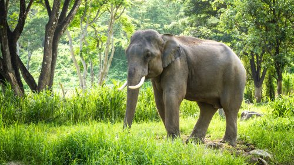

De Aziatische olifant is kleiner dan de Afrikaanse olifanten. Zijn schouderhoogte is ongeveer tussen 2 en 3,5 meter en zijn gewicht tussen de 3000 en 5000 kg. Hij heeft kleine naar beneden wijzende oren en een bolle rug (in het Latijn: elephas). De slurf van de Aziatische olifant heeft aan het einde een vinger aan de bovenkant, de Afrikaanse soort heeft er een aan de onder- en een aan de bovenkant. Verder verschillen het aantal nagels en de vorm van de kiezen (de Afrikaanse olifant heeft ruitvormige (vanuit het Latijn: loxodonta) lamellen, de Aziatische heeft rechte lamellen). Bij de Aziatische olifanten hebben enkel de mannetjes slagtanden. Ook zijn de oren van de Afrikaanse olifant groter. De Aziatische olifant verliest zijn warmte niet langs de oren, in tegenstelling tot de Afrikaanse olifant; andersom gebruikt de Aziatische olifant hier wel zijn slurf voor, wat de Afrikaanse verwant niet doet.
Een mannetje wordt stier of bul genoemd, het vrouwtje een koe of vaars en het jong een kalf.
Aziatische olifanten worden in het wild gemiddeld 60 jaar oud, hetgeen onder gunstige omstandigheden in dierentuinen kan oplopen tot 80 jaar. Het voor zover bekend oudste exemplaar overleed in 2003 op 86-jarige leeftijd in de dierentuin van Tapei.
Er worden van deze soort 5 ondersoorten onderscheiden:
- De Ceylon-olifant of Sri Lankaanse olifant
- De Indische olifant
- De Sumatraanse olifant
- De Borneodwergolifant
De verschillen tussen de ondersoorten zijn erg klein. De grootste verschillen zitten tussen de ondersoorten Ceylon-olifant en Sumatraanse olifant. De Ceylon-olifant is het zwaarst (tot 5500 kilogram) en de Sumatraanse olifant het lichtst (tot 4000 kilogram) van alle ondersoorten. Ook het verschil in pigment is het grootst tussen deze twee ondersoorten. De Ceylon-olifant is het donkerst, de Sumatraanse olifant het lichtst, met de minste pigmentvlekken. Wat ook opvallend is, is dat de Sumatraanse olifant 20 paar ribben heeft terwijl alle andere Aziatische olifanten 19 paar hebben. De Borneodwergolifant is kleiner dan de andere Aziatische olifanten, maar ook heeft hij grotere oren, een langere staart en rechtere slagtanden. In de Maleisische deelstaat Sabah leven 100 tot 200 dwergolifanten